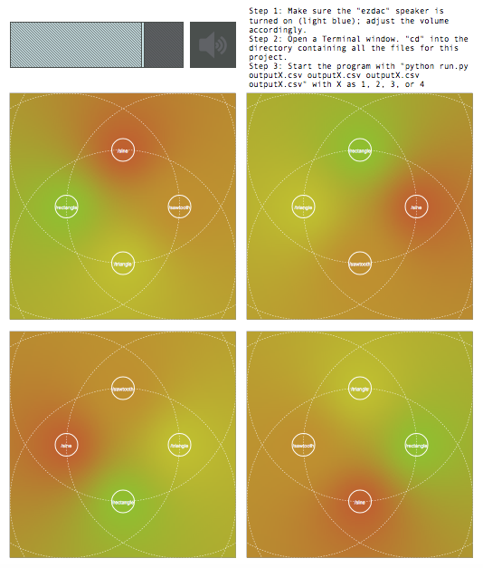
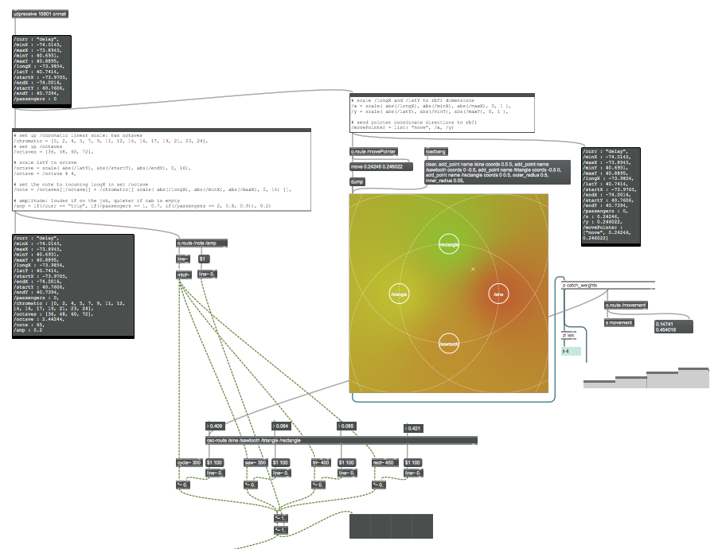
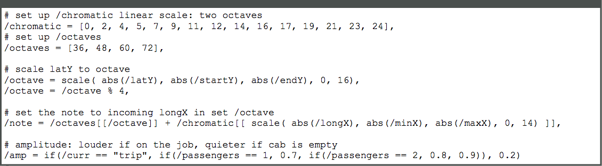

Course: MUSIC 158A
Sound and Music Computing with CNMAT Technologies
Semester: Fall 2015
Repository: [track158-taxis]
The class midterm assignment was the following quest: "Create something cool in Max."
For my project, I created a data "audio"-lization of taxi data.
The program's user interface
With the polyline-encoded data from Chris Whong's NYC Taxis: A Day in the Life project (original data can be found at 2013 NYC Taxi Trip Data), I wrote a Python script that unpacks these data files and translates the taxi's movements into sound by tracking its unique path across New York City. The script unpacks the polylines in the CSV files, creates timed OSC bundles of polyline-decoded taxi movements, and sends the relevant information--such as the longitude and latitude coordinates--to Max. In Max, four voices are set up to track up to four taxis' movements at a time, with each of their sound paths layered together.
The latitude, longitude coordinate pairs are scaled in two ways to set up the waveforms and frequency. Whether or not the taxi is currently full or currently empty, and how many passengers the cab is carrying, determines the amplitude.
The Max patch for one taxi/one voice
WAVEFORMS: The taxi's X and Y coordinates are scaled from 0 to 1, according to the RBFI patch dimensions. Depending on the taxi's location in the RBFI (radial basis function interpolater) UI and the locations of the four waveform points, different waveforms (cycle, sawtooth, triangle, and rectangle) are weighted in the RBFI patch by its proximity to each of the individual waveform's inner radius.

RBFI (radial basis function interpolater)

Scales latitude, longitude to RBFI dimensions; calculates weight of each waveform

The weight of each waveform
FREQUENCY: A list of steps for a two-octave chromatic scale and a list containing starting pitch 'C' for four octaves is set up. The taxi's current Y coordinate is scaled from the single trip's start and end Y coordinates (or the minimum and maximum Y coordinates of taxi's total trips) to a number between 0 to 16, mod 4, taken as the index for the base note in the list of octave starting pitches. The taxi's current X coordinate is scaled from the trip's minimum and maximum X coordinates of the taxi's total trips (or the single trip's start and end X coordinates) to a number between 0 and 14, taken as the index for the step/note away from the base note in the octave.
AMPLITUDE: Depending on if the taxi is currently full or empty, the amplitude will be set to a higher or lower amplitude, respectively. The more passengers in the cab during the trip, the more dominant the amplitude will be.
Scales latitude, longitude to frequency; sends number of passengers to determine amplitude

An example of a resulting visual spectrogram of signal